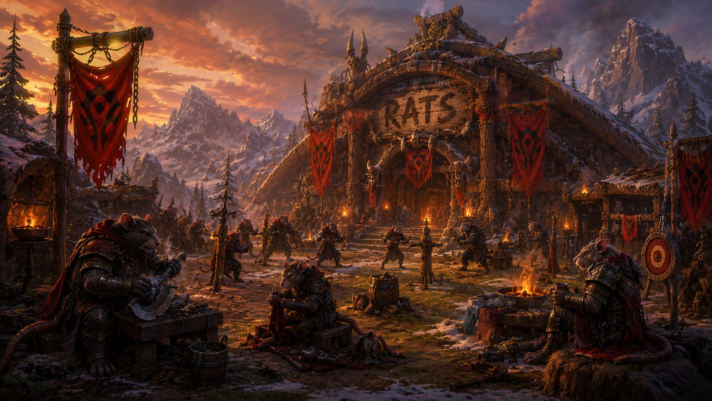

Officer tools
Import your guild roster JSON (from the in-game export) to build the database.
Run the in-game roster export, copy its JSON, and paste it below. It merges with the current data — specs and join dates are kept.